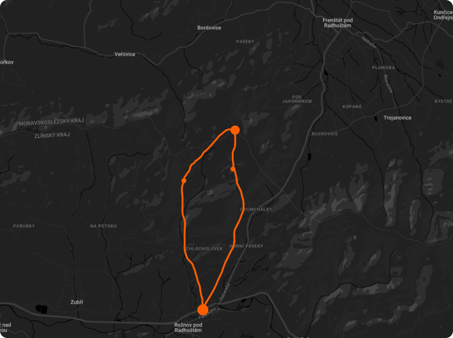

Restaurants
on the way you can find 2 restaurants.. One in Dolní Paseky called. and then the second on the top of the Javorník mountain.
Transport
You can move closer from the center of Rožnov with bus.
Equipment
In winter you should bring with you a really warm clothes and even maybe a crampons. Weather in winter can be extreme. Check forecast first.